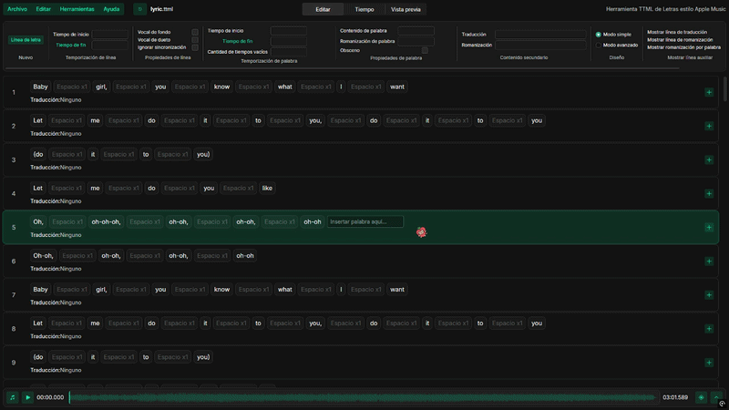
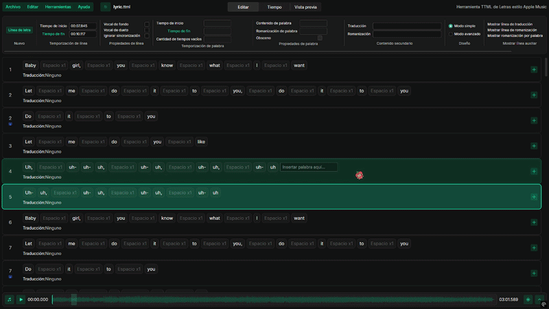

Guía para crear letras sincronizadas para Cloud
Aprende cómo preparar y sincronizar las letras de una canción de manera sencilla.
 Creada por Sam!Última edición: 11 de agosto de 2026
Creada por Sam!Última edición: 11 de agosto de 2026Para poder sincronizar un archivo TTML es necesario usar una computadora o laptop, ya que el proceso en Android es algo incómodo de realizar.
Descarga la canción
Descargar la canción es muy sencillo: copia su enlace desde una plataforma musical. Recomendamos obtenerlo desde Spotify. Después, abre SpotiDown, pega el enlace y descarga la canción.
Obtén las letras
Abre la herramienta de preparación, busca la canción con LRCLIB y copia el texto generado con los separadores necesarios para importarlo.
Preparar letras con LRCLIBAbrir herramienta →Importa las letras
Abre AMLL TTML Tool y sigue estos pasos:
- Dirígete al botón Archivo.
- Selecciona Importar letras.
- Elige Importar desde texto plano.
- Pega las letras generadas y pulsa Importar.

Importa la música
Haz clic en la nota musical de la esquina inferior izquierda y selecciona el audio descargado. Ya puedes comenzar a ajustar el tiempo de cada palabra.

Revisa y corrige las letras
Comprueba que la transcripción no tenga errores y siga las normas de transcripción de Genius. Si tienes dudas, puedes pedir ayuda en el servidor de Discord de Cloud.
- Para editar una palabra, haz doble clic sobre ella y presiona Enter para guardar.
- Para añadir una línea, pulsa Línea de letra dentro del apartado Nuevo de la barra de herramientas.
- Para marcar una línea como voz de fondo, selecciónala y activa Voz de fondo en las propiedades de la línea. Aparecerá debajo de la línea principal y con un tamaño menor.
- Para marcar una línea como dueto, selecciónala y activa Voz de dueto. La línea aparecerá en el lado opuesto de la página.
- Dos líneas de fondo no pueden aparecer una después de otra.
- Una canción no puede comenzar con una línea de fondo.
- La participación de un cantante o un dueto no puede comenzar con una línea de fondo.
- La participación completa de un cantante no puede consistir únicamente en una sola línea de fondo.
- Marcar Palabra obscena en las propiedades de una palabra no produce cambios visibles dentro de Cloud.
Sincroniza las letras
Reproduce la canción y utiliza estos atajos para asignar los tiempos de cada palabra:
Busca a los compositores
Utiliza siempre los nombres reales de los compositores, salvo que no exista información pública.
- Abre la canción en Genius.
- Desplázate hasta la sección de créditos.
- Abre el perfil de cada persona incluida en el apartado de compositores.
- Copia su nombre real. También puedes contrastar la información con Spotify.
Añade los compositores al TTML
Cada compositor debe añadirse de manera individual.
- Abre el menú Editar en la esquina superior izquierda.
- Selecciona Editar metadatos.
- Pulsa Añadir nueva clave y valor.
- Selecciona Compositor.
- Pega el nombre en el campo que aparece.
- Para agregar otra persona, pulsa Añadir debajo del campo y repite el proceso.

Exporta las letras
Si el TTML tiene líneas sin sincronizar, al finalizar la última línea sincronizada las líneas sin sincronizar quedarán estáticas.
- Abre el menú Archivo en la esquina superior izquierda.
- Pulsa Guardar.

Sube las letras a Cloud
Abre en Cloud la canción correspondiente y entra al modo de letras ampliadas o a pantalla completa. Pasa el cursor sobre la portada, pulsa el icono para subir un TTML y selecciona el archivo recién creado. Finalmente, envía la contribución y espera la respuesta del equipo.